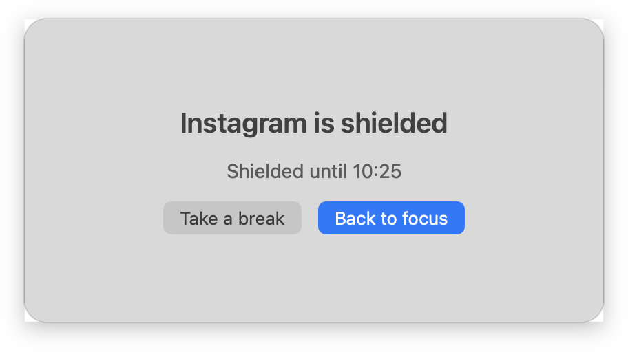
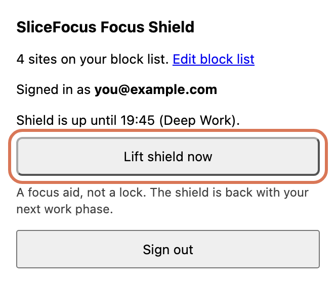
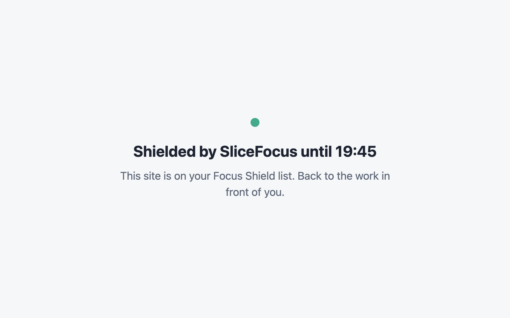

Pick the apps and sites that pull you away. During a work phase they
are out of reach; every break lets them back in. Resisting costs
attention; a shield costs nothing.
Set it up where you get distracted
A session started on any device shields all of them. Pick your list once per device.
Runs on Screen Time. Nothing to install beyond SliceFocus.
Settings › Focus Shield, turn on Block apps & websites. Tap Allow when iOS asks.
Tap Choose apps & websites. Open a category to pick the apps inside; add sites at the bottom. Pick at least one, then Done.
Start a session. During work phases the chosen apps show the Screen Time shield.
No apps in the picker? Turn on Settings › Screen Time › App & Website Activity, then open it again.
Declined access? Check the same setting, then turn Block apps & websites on again or tap Try again.
Apps are interrupted by SliceFocus for Mac, not closed. Websites are held back in Safari by the extension that ships inside it.
Settings › Focus Shield, turn on Block apps & websites.
Under Apps, Add app… from your Applications folder. Under Websites, add sites or take a Quick add preset.
Next to Safari extension, click Enable in Safari, tick SliceFocus, and choose Always allow on every website when Safari asks.
Start a session. A listed app brings up the shield window; a listed site shows a calm page instead.

The shield window over a listed app.
Sites still open? The Safari extension row says Off until the extension is on. Safari and Chrome are covered; other browsers are not.
The SliceFocus Focus Shield extension follows your session through your account, on any computer. On its way to the Chrome Web Store.
Once it is in the Chrome Web Store, install it and sign in with the Google or email account you use in SliceFocus.
Open Edit block list from the popup and add your sites, or take a Quick add preset.
Start a session. Listed sites close for the work phase and open again at the break. Lift shield now lifts it by hand until the next work phase.

The popup during a work phase.
Signed in with Apple? Link a Google or email login in SliceFocus under Settings › Account first; Chrome can’t use Sign in with Apple.

What a listed site shows during a work phase, in Safari and Chrome.
Good to know
It acts only during work phases. Breaks and idle time are untouched, and you can lift it yourself.
Lists stay on each device. On iPhone, Apple’s picker gives SliceFocus opaque tokens, so the app never learns which apps you chose.
The extensions never read page content; they only hold back the addresses on your list. Privacy policy.